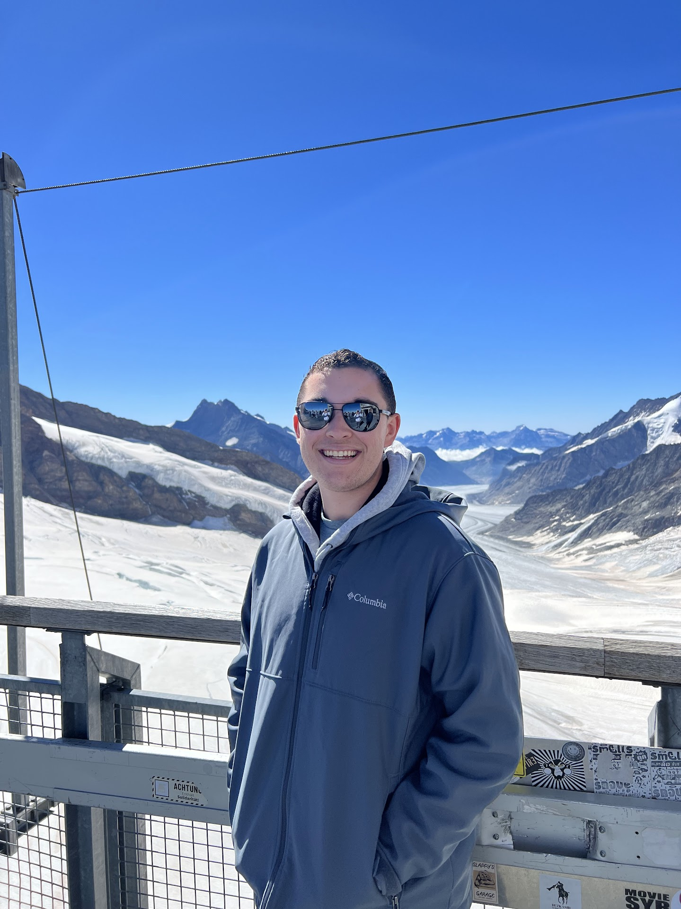

Zack Pakin's Map Portfolio
Spring 2023 | Web Development and GIS for Social Change
My Interests
- Intersections between technology and humanities
- Technology in urban environments
- Use of technology in education
My Favorite Non-Computer Science Classes I've Taken
- Introduction to Digital Humanities (DGT HUM 101)
- Engaging Los Angeles (CESC 50SL)
- Business Law (MGMT 180)
Bio
I am Zack Pakin and I am a fourth-year computer science student at UCLA. Throughout my tenure as an undergraduate, I have become vastly interested in the intersection between technology, business, and society. In my free time, I enjoy cooking, watching TV, spending time with friends, and traveling whenever possible. During this quarter, I hope to create maps and visualizations that suggest places for improvement in public infrastructure, such as healthcare accessibility or affordable healthy food. I believe that effective and digestible visualizations help identify problems and suggest first steps towards their resolution.